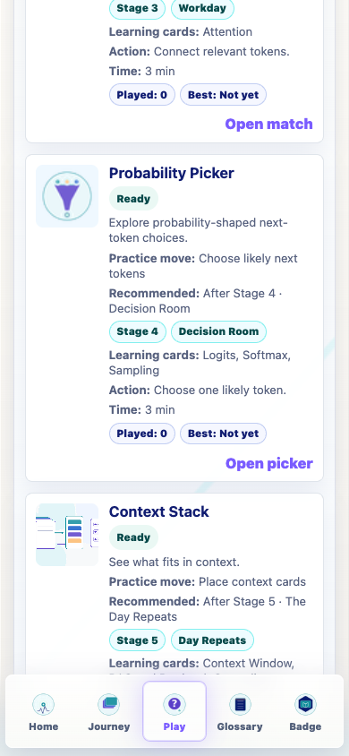
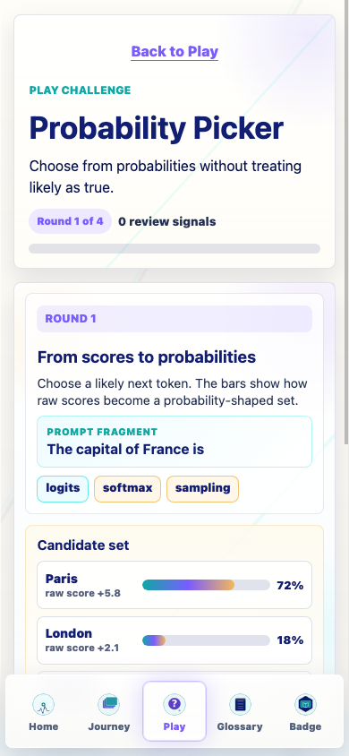
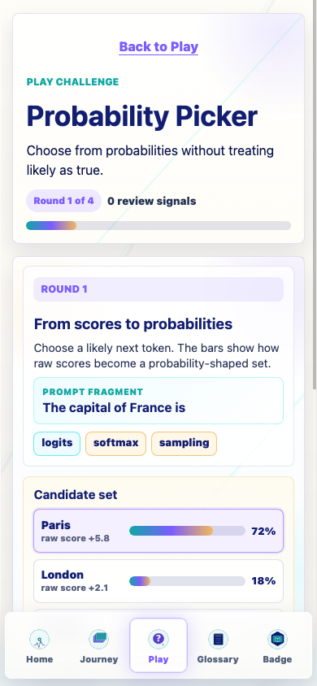
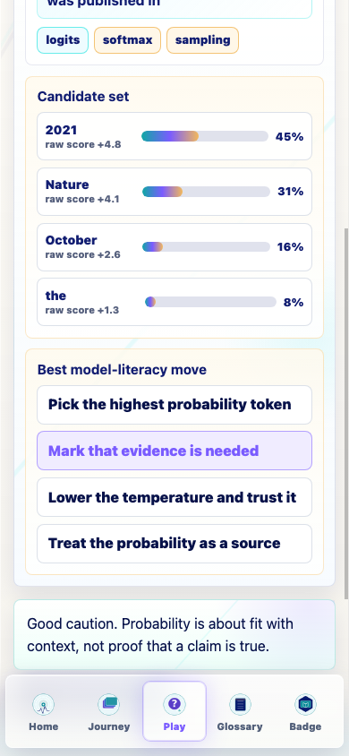
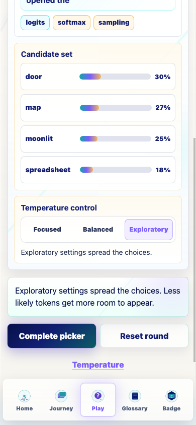
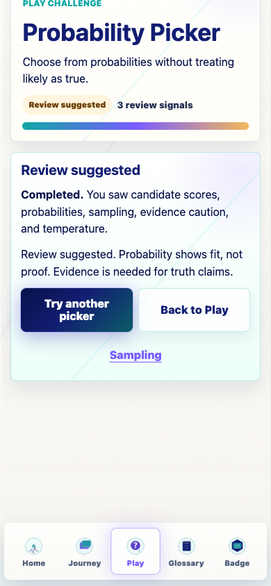
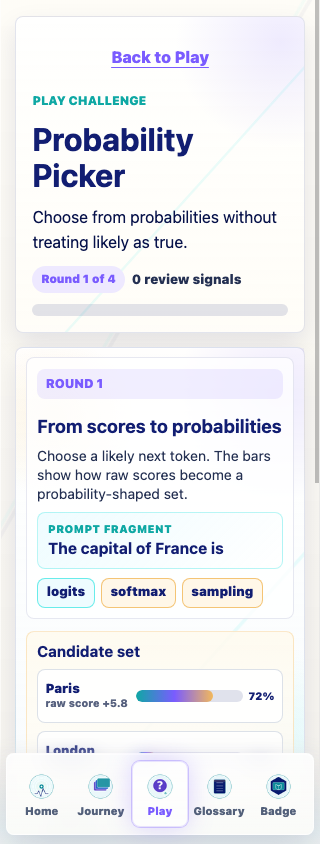
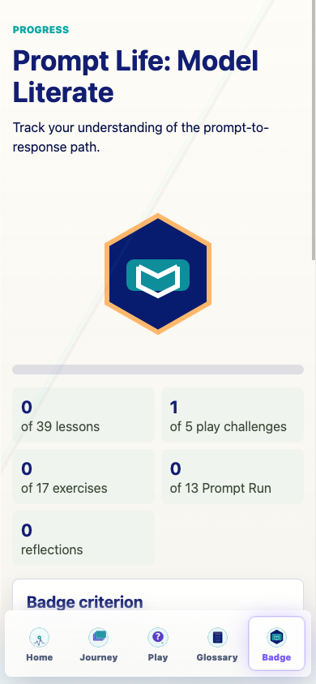

Prompt Life v0.27.0
This pass turns Probability Picker from a foundation-ready Play card into a working four-round challenge about logits, probabilities, sampling, evidence, and temperature. It stays calm, non-competitive, and independent from Journey progress.
promptlife.playChallenges.v1 with attempts, completions, last outcome, best progress, and misconception tags.0.27.0.Learners practice a small but important distinction: likely next-token choices are not the same as truth. The challenge shows probability-shaped options without turning the activity into a quiz score.
| Round | Purpose | Core action | Main misconception guarded |
|---|---|---|---|
| From scores to probabilities | Shows candidate raw scores and probability bars. | Choose a likely next token for a clear factual fragment. | High probability is useful fit, not magic knowledge. |
| Sampling can vary | Shows that more than one continuation can be plausible. | Choose either of two fitting next tokens. | Sampling is shaped choice, not one fixed answer every time. |
| Probability is not truth | Separates confident-looking token probabilities from evidence. | Choose the model-literacy move: mark that evidence is needed. | Probability is not proof, a source, or grounding by itself. |
| Temperature shapes choice | Lets learners narrow or spread the candidate set. | Tap Focused, Balanced, or Exploratory. | Temperature changes selection shape; it does not verify truth. |
Play card: "Explore probability-shaped next-token choices." Primary action: "Open picker."
Challenge subtitle: "Choose from probabilities without treating likely as true."
Successful completion: "Completed. You saw why likely is not the same as true."
Review completion: "Completed. Review suggested. Likely and true were mixed at least once."
promptlife.playChallenges.v1.promptlife.glossaryDojo.v1.promptlife:v1:gameInsights, pl.gameInsights, promptlife:v1:traceComplete, pl.traceComplete, promptlife:v1:promptRunProgress, pl.promptRunProgress, promptlife:v1:learningTourComplete, and pl.learningTourComplete.completed, 1 attempt, 1 completion, and 100% best progress.review-suggested, 2 attempts, 2 completions, and 100% best progress.1 of 5 play challenges after Probability Picker completion.Opened without horizontal overflow at 390px: Glossary Dojo, Context Stack, Attention Match, Prompt Run, and Probability Picker.
At 320px, the active Probability Picker start state measured scrollWidth 320 and clientWidth 320.
npm run typecheck: passed.npm run build: passed with the existing Vite large-chunk warning.npm run build:pages: passed with the existing Vite large-chunk warning.npm run audit:answers: passed. Total surfaces: 69; randomized surfaces: 46; excluded fixed-order surfaces: 23.Probability Picker v1 is intentionally a small teaching loop, not a real sampler or logits engine. It uses fixed candidate examples so the learning distinction stays legible on mobile.
package.jsonpackage-lock.jsonsrc/features/play/challengeRegistry.tssrc/main.tsxsrc/styles/global.cssdocs/play/PLAY_FOUNDATION_LOG.mddocs/play/prompt-life-v0-27-0-probability-picker-v1-report.htmldocs/play/prompt-life-v0-27-0-probability-picker-v1-report.pdfdocs/play/screenshots/v0-27-0-probability-picker-v1-screenshots.jsondocs/play/screenshots/v0-27-0-*.png






